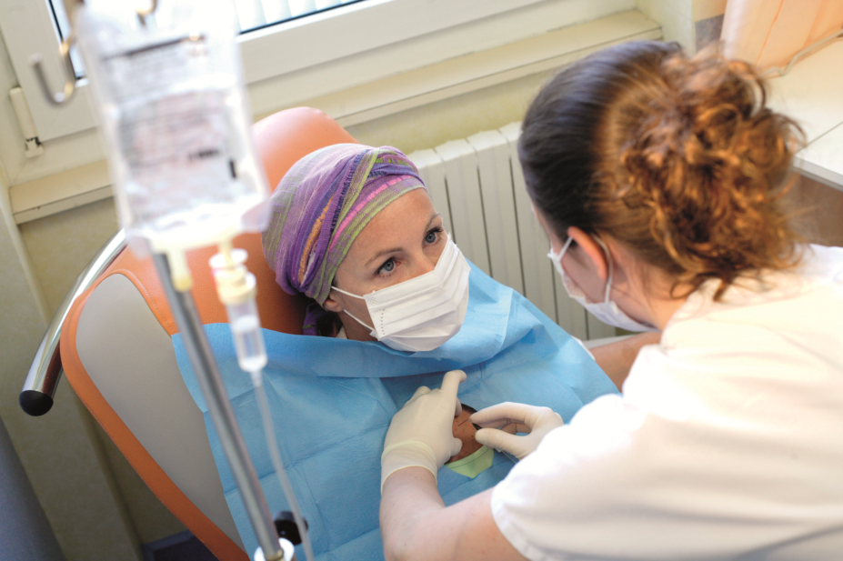

Mammography
Low-dose X-ray imaging used for breast cancer screening.
Learn how screening, diagnosis, treatment and follow-up fit together in breast cancer care.

Screening may detect breast cancer before symptoms appear. The best screening plan depends on age, risk factors and local clinical guidance.
Low-dose X-ray imaging used for breast cancer screening.
Imaging often used to assess a specific breast concern.
Used for selected people, including some at higher risk.
Assessment by a clinician when symptoms or concerns arise.
If a symptom or screening test raises concern, additional tests may be recommended. A biopsy can confirm whether cancer is present, while further evaluation helps guide treatment planning.
Treatment depends on cancer type, stage, biomarker results, general health and personal preferences. A care team may recommend one or more approaches.
Surgery may remove a tumour or breast tissue, depending on the case.
Radiation may be used to reduce the chance of cancer returning.

Medicines can treat cancer cells throughout the body.
Certain treatments act on specific characteristics of cancer cells.

Some cancers respond to medicines that block or lower hormone effects.
Follow-up appointments can help monitor recovery, manage side effects and address ongoing physical or emotional concerns. Your care plan should explain when to return and whom to contact about new symptoms.